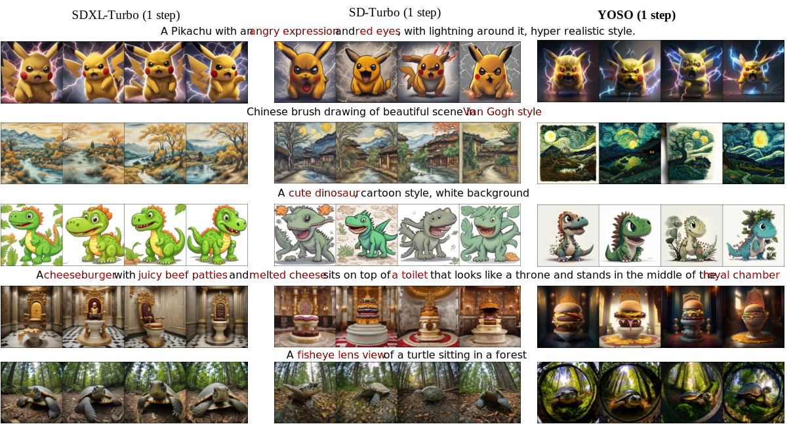
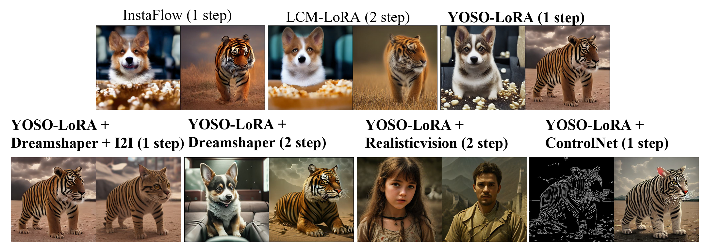

You Only Sample Once: Taming One-Step Text-To-Image Synthesis by Self-Cooperative Diffusion GANs

Abstract
We introduce YOSO, a novel generative model designed for rapid, scalable, and high-fidelity one-step image synthesis. This is achieved by integrating the diffusion process with GANs. Specifically, we smooth the distribution by the denoising generator itself, performing self-cooperative learning. We show that our method can serve as a one-step generation model training from scratch with competitive performance. Moreover, we show that our method can be extended to finetune pre-trained text-to-image diffusion for high-quality one-step text-to-image synthesis even with LoRA fine-tuning. In particular, we provide the first diffusion transformer that can generate images in one step trained on 512 resolution, with the capability of adapting to 1024 resolution without explicit training.
Methodology
Our approach combines diffusion processes with GANs, bridging the gap between the two models and leveraging the distinct advantages of each: it can be versatile for various downstream tasks while also boasting the advantage of rapid generation. To address the typical instability in GAN training, we do not directly use real data as ground truth for training. Specifically, we believe that the quality of images denoised by generator from highly-noised images will be lower than that from lowly-noised images. Therefore, we use the former as the fake images for GAN training and the latter as the real images. This design significantly stabilizes our GAN training process, and since the training is still defined on clean samples, it successfully acquires the ability to perform one-step generation.
Benefiting from the proposed design, our method possesses the following advantages:
1. A stable training process,
2. Extremely fast high-quality one-step generation,
3. Broad prospects for application in various downstream tasks.
Qualitative Comparison
To provide more comprehensive insight in understanding the performance of our YOSO, we further provide the qualitative comparison here. The comparison shows that: YOSO clearly beats SD-Turbo in terms of both image quality and prompt alignment. Specifically, the samples by SD-Turbo are blurry to some extent. Although SDXL-Turbo with a larger model size improves the sample quality compared to SD-Turbo, we find that the samples by YOSO is sharper than SDXL-Turbo to some extent, and we do better in prompt alignment. For example, in the first row related to a Pikachu, both SD-Turbo and SDXL-Turbo cannot follow the prompt to generate angry expressions and red eyes, while YOSO follows the prompt more precisely. Moreover, it is important to highlight that SDXL-Turbo seems to have a serious issue in mode collapse. Specifically, the first row and third row show that samples by SDXL-Turbo are really close to each other. This indicates that SDXL-Turbo performs poorly in mode cover. Overall, based on quantitative and qualitative results, we conclude that our YOSO is better in sample quality, prompt alignment, and mode cover compared with the state-of-the-art one-step text-to-image models (i.e., SD-Turbo and SDXL-Turbo).
Down-stream Tasks

BibTeX
@misc{luo2024sample,
title={You Only Sample Once: Taming One-Step Text-To-Image Synthesis by Self-Cooperative Diffusion GANs},
author={Yihong Luo and Xiaolong Chen and Jing Tang},
booktitle={arXiv preprint arxiv:2403.12931},
year={2024},
archivePrefix={arXiv},
primaryClass={cs.CV}
}
Project page template is borrowed from DreamBooth.